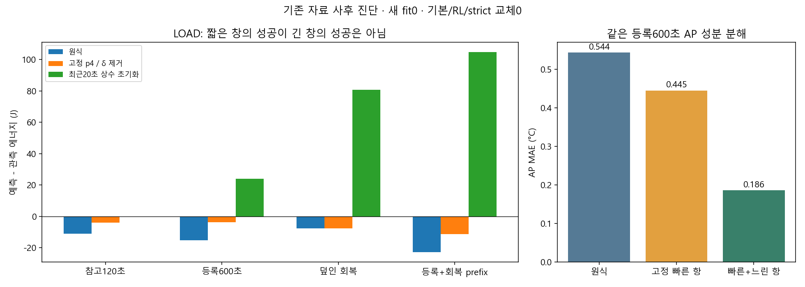
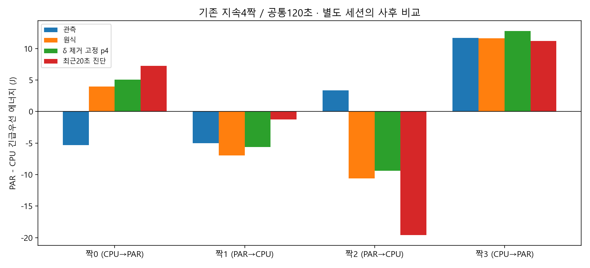

후속 구현 완료: δ0/p4 실제5fit·35평가·에너지+AP 비용 API — 아래는 당시 토론과0fit 진단이며 후속 실행 결과와 구분합니다.
유휴 상수 보정을 제거하면 일부 에너지 오차를 줄일 수 있었습니다. 최근20초 전력을 긴 미래에 그대로 쓰는 대안은 짧은 창만 좋아지고 긴 회복에서 실패했습니다. 권고는 개발4만의 δ=0/p4 제약 재추정 후보1개이며, 아직 추정하지 않았습니다. 무부하 미래 기준전력·정책 차이의 부호 문제는 남아 있습니다.
| 같은 LOAD 관측창 | 원식 → 성분 진단 | 해석 |
|---|---|---|
| 37.4174–2554.5103초 J 차이 | −23.060 → −11.934J | 고정 p4에서 δ만 제거, 새 학습 아님 |
| 같은 구간 AP MAE | 0.43731 → 0.17296°C | 고정 LOAD_SLOW, 과거13악화 유지 |
| 과거29 참고120초 평균 절대J | 5.522 → 5.087J | 11악화·C0미개선, 일반 교체 안 함 |
| CPU/PAR 4짝 차이 오차 | 6.322 → 6.213J | 부호 오판2/4, 정책 순위 미해결 |
결론·정확한 창·한계 · 조건부 PC/실측 계획 · 전체 근거·재현 · 검증·hash · 직전 후보 결과


추가 실측은 PC 후보 동결 뒤 새 예측 확인 질문이 남을 때만 검토합니다. 기존 C0+LOAD 두 조건 참고 관측88분·예약150분50초는 새 승인/collection plan이 아닙니다. 정책짝4회·초기이력 식별의 반복 수와 예산은 별도 미확정입니다. 지원 마스크 통과, 예측 오차, 정확도 합격, 정책 우월성은 다른 단계입니다.